22 марта, четверг
Встали рано, но это не очень помогло, так как я долго провозился с камерой. Оказалось много мелких дырок, какая-то местная колючка отперфорировала ее. Надо было сразу менять на новую, а я занялся художественной аппликацией. Зря, только время потерял.
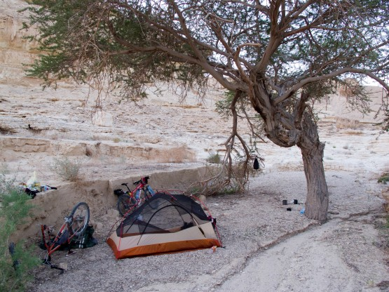
Утренний ремонт
Вчера мы здесь купались
В итоге утренний холодок опять пропустили. Как назло, именно сегодня нас настигло настоящее пекло. Как не старались мы растянуть вчерашнюю воду, но уже через пару часов ее осталось буквально по литру на нос. Андрей начал по этому поводу переживать. Оно и не мудрено, кругом пустыня, шпарит солнце, температура далеко за 30, у нас всего по литру воды, а до шоссе минимум пару часов пути. Но, мы же Израиле! И в строгом соответствии с местной традицией на горизонте показалась парочка джипов. Тут есть серьезное отличие от российской действительности. В пустынях Израиля джип это всегда хорошо (правда, с арабскими не сталкивался). Почему хорошо? Все просто, в нем есть вода и человек, который готов поделиться этой водой. Так принято: остановиться спросить все ли в порядке, не нужна ли помощь и совершенно естественно поделиться водой. После этого (и не только этого) я очень критично отношусь к байкам про скупость евреев, не верю и точка.
Джиперы дали нам по 2х литровой банке воды каждому и двинулись дальше, а мы благополучно добрались до шоссе и начали подъем по маале Акробим (подъем Скорпионов). Место очень красивое и необычное. Примерно на середине подъема горизонт на юге начал зловеще менять цвет. Еще через полчаса стало очевидно - к нам идет пыльная буря. Кстати, еще в Араде нас предупреждали, что скоро придет хамсим, очень неприятный сухой ветер из Сахары.
Хамсим наступает
Оставалось только наблюдать, как это рыжее облако заполняло собой весь горизонт и в конечном итоге таки накрыло нас. Я первый раз находился внутри пыльной бури, ощущения довольно яркие: сильный сухой и достаточно теплый ветер, видимость метров 20, все тело и одежда покрывается слоем мелкой пыли. Пыль очень мелкая и уже через полчаса весь рюкзак и одежда буквально пропитаны ей.
Перед нами встает дилемма: с одной стороны мы уже практически поднялись, нам остается максимум 50 метров вверх и спуск в Большой кратер. С другой стороны нет никакого смысла ехать в кратер, когда видимость нулевая, ведь мы же хотим посмотреть все красоты, а не просто накрутить километры.
Я решаю часик переждать в небольшом цирке, где ветер потише. Расстилаем коврики и заваливаемся спать. Андрею не спится, он сбегал на холм (в низине не было связи), попытался позвонить местным ребятам - не дозвонился, позвонил в Москву, там глянули прогноз и "порадовали", что буря минимум на 3 дня. С этими новостями Андрей вернулся и разбудил меня.
Мне очень не хотелось менять маршрут и внутреннее чувство подсказывало, что делать этого не надо, но логика взяла верх. Решено, едем вниз до 90 трассы, садимся на автобус до Эйлата, там пережидаем бурю и продолжаем маршрут в обратном направлении, теперь уже с конца.
До 90 трассы домчались вообще не крутя педали, сначала спуск по серпантину, потом сильнейший попутный ветер. Автобус нашли на первой же заправке. Сели, вышли в интернет (он в автобусах бесплатный) и таки дозвонились до Игоря Скорубского, который был абсолютно уверен, что уже завтра буря пройдет. Но, изменить уже ничего нельзя - автобус несется в Эйлат, эх.
В Эйлат приехали уже затемно. В воздухе висит пыль, но ветра практически нет.
Закупились в ближайшем от автостанции магазине и поехали вдоль моря к египетской границе, в надежде найти тихую стоянку на берегу моря. Наивные - пейсах, длинные выходные, все приехали к морю. Весь берег в палатках, огромных навесах, люди жарят разнообразное мясо, пьют вино и восседают на натуральных диванах, привезенных из дома. Настоящий муравейник. Первое место для стоянки нашлось только в 50 метрах от погранперехода. Поставили палатку и попробовали уснуть под ритмичное бумц-бумц, доносящееся из соседнего отеля. Получилось не сразу.
Дневной пробег 48, 1 км, набор высоты 718 метров
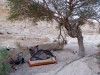 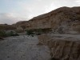 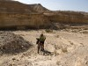 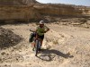 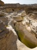 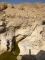 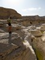 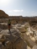 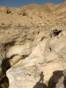 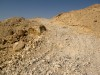 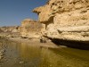 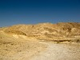 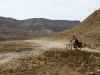 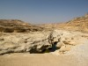 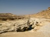 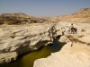 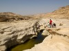 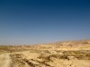 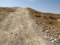 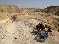 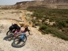 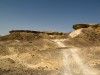 
 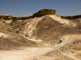 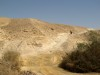 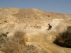 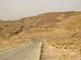 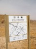 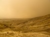 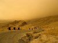 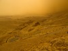 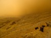 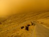 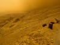 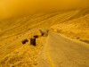 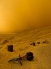 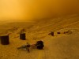 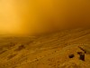 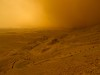 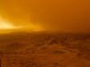 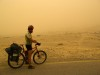 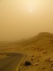
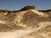 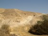 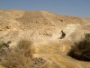 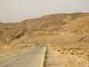 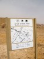 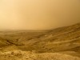 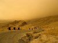 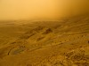 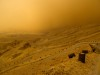 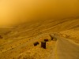 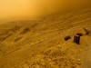 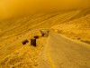 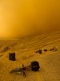 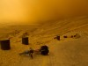 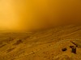 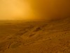 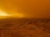 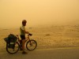 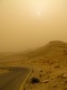
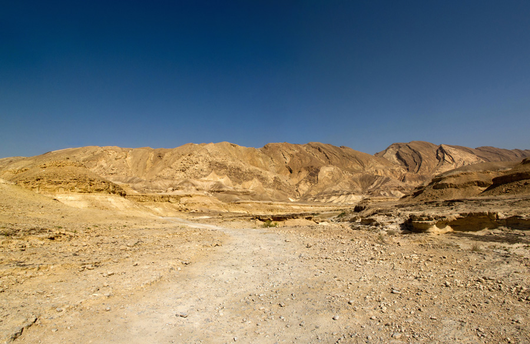
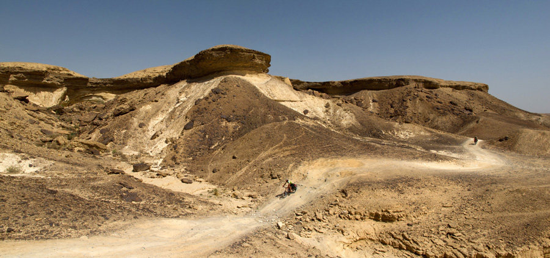
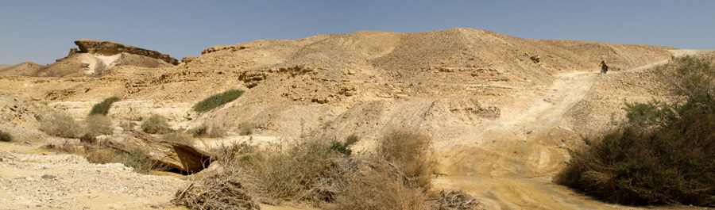
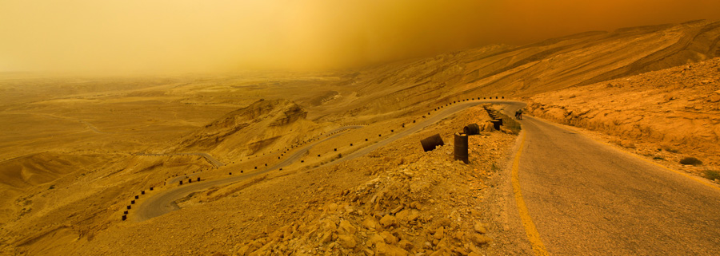
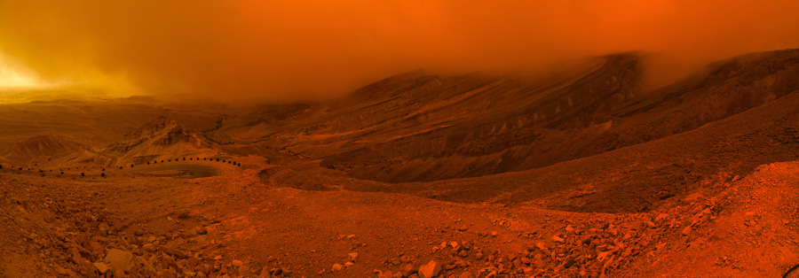